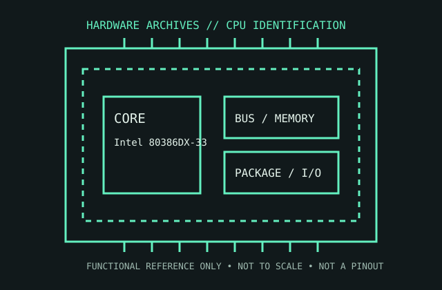

[ EARLY X86 PROCESSORS // IDENTIFIED COMPONENT ]
Intel 80386DX-33
A 33 MHz Intel 80386DX, representing the fully 32-bit 386 implementation introduced in 1985 and used in later 386-era desktop systems.

MODEL IDENTIFICATION: Intel 80386DX-33. Read the full top marking/OPN, speed grade, package, and stepping from the physical part; do not transfer specifications across similarly named revisions.
Recorded specifications
| Cataloged part | Intel 80386DX-33 |
|---|---|
| Era / family | 80386DX 32-bit x86 family, 1985 onward; 33 MHz DX speed grade. |
| Key specifications | 33 MHz rated clock; 32-bit registers, data bus, and address bus; 4 GB physical address space; protected mode and paged virtual memory; 32-bit external bus; 132-pin PGA package for common desktop versions. |
| Interface / fit | Requires a 386DX-compatible 132-pin PGA board and matching clock/bus design. Do not confuse it with 80386SX parts, which have a 16-bit external data bus and different package/pinout. |
| Variants / identification | DX and SX are materially different bus/package products. Speed grades and voltage requirements should be checked from the complete S-spec/marking and board manual; later 386 board revisions vary. |
Compatibility and service notes
- Requires a 386DX-compatible 132-pin PGA board and matching clock/bus design. Do not confuse it with 80386SX parts, which have a 16-bit external data bus and different package/pinout.
- DX and SX are materially different bus/package products. Speed grades and voltage requirements should be checked from the complete S-spec/marking and board manual; later 386 board revisions vary.
- Inspect all PGA pins under magnification and confirm pin-1 orientation. Record board chipset, oscillator frequency, wait-state settings, and BIOS revision with any successful test.
- Before installation, compare the exact CPU marking with the motherboard maker’s support list, board revision, BIOS minimum, package/socket, power requirements, and memory type. Do not force a package into a socket.
Service & archival record
Inspect all PGA pins under magnification and confirm pin-1 orientation. Record board chipset, oscillator frequency, wait-state settings, and BIOS revision with any successful test.
For a collection record, photograph both sides, retain the full model/OPN and date/lot codes, describe package and contact condition, and record the tested motherboard revision, firmware, cooling, memory, and measured operating conditions. Separate measured observations from published limits.
Sources & further reading
- Intel 80386DX data sheet and package information — 80386DX model familyModel-specific manufacturer, technical-document, or product-history reference; consult the exact device marking and board revision.
- 80386 Programmer’s Reference Manual — Intel 80386 ISA and paging referenceModel-specific manufacturer, technical-document, or product-history reference; consult the exact device marking and board revision.
- Intel 80386 processor history — Intel MuseumModel-specific manufacturer, technical-document, or product-history reference; consult the exact device marking and board revision.
- Ancient Electronics — Building a high end 386DX PCIndependent video review; treat as supplementary context, not primary manufacturer documentation.
Third-party mirrors or historical document indexes may host manufacturer-authored manuals. Check document revision and exact model marking; board compatibility remains specific to its maker and firmware.